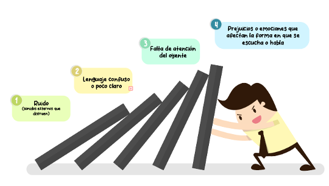
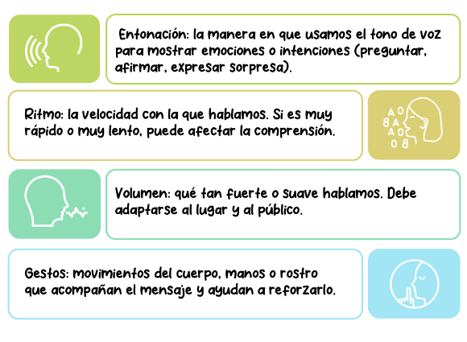
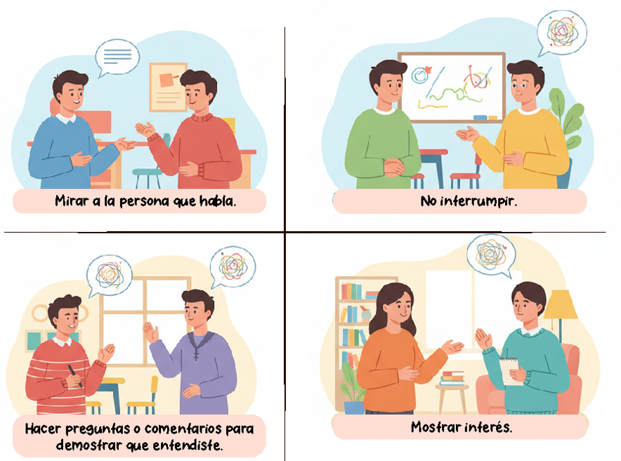
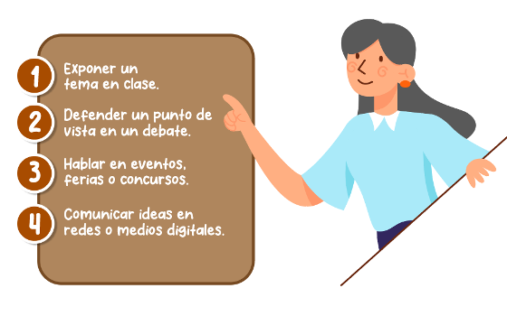
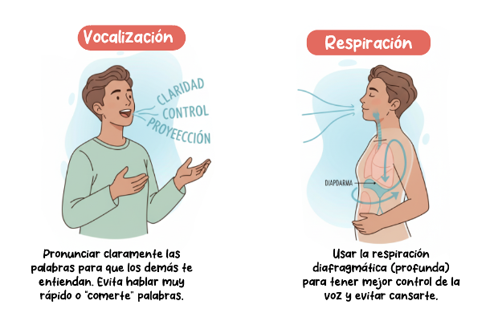
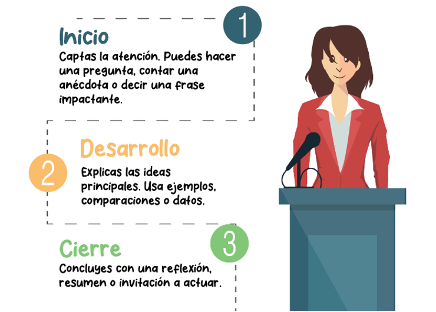

Vamos a sumergirnos en los fundamentos de la comunicación y la expresión oral, aprendiendo a transmitir mensajes de forma clara, atractiva y efectiva.
Descubriremos cómo la entonación, los gestos, el ritmo y hasta el volumen de la voz pueden hacer que nuestras palabras tengan más impacto.
También hablaremos sobre esas barreras que a veces impiden que nos entiendan, y entrenaremos algo clave para cualquier trabajo en equipo:
la escucha activa, porque comunicar no es solo hablar, sino también saber escuchar.
Además, daremos los primeros pasos en el fascinante mundo de la oratoria: vencer el miedo escénico, organizar un discurso y usar el lenguaje no verbal
como nuestro aliado. Todo esto te servirá no solo para defender tus proyectos web, sino también para expresarte con seguridad en cualquier espacio de tu
vida personal y profesional.
✨ Así que prepárate para darle voz a tus ideas y convertirte en un comunicador que conecta, inspira y transmite con confianza.
Objetivos de aprendizaje
🧠Comprender los elementos básicos de la comunicación y la importancia de una expresión oral clara.
🔍Reconocer y practicar los componentes de la expresión oral (entonación, ritmo, volumen, gestos y lenguaje no verbal) para mejorar la claridad y el impacto del mensaje.
📝Aprender y practicar técnicas básicas de oratoria para hablar con seguridad y claridad.
¿Qué es la comunicación efectiva?
La comunicación efectiva es aquella en la que el mensaje que una persona quiere transmitir llega claramente al receptor, sin confusiones. Esto significa que el emisor (quien habla) y el receptor (quien escucha)
entienden el mensaje de la misma forma.
🔑
Importancia
Ayuda a evitar malentendidos, mejora las relaciones personales y permite expresar ideas, sentimientos y opiniones de manera clara y respetuosa.
✨
Beneficios
Fortalece relaciones, resuelve conflictos, mejora el trabajo en equipo y aumenta la confianza entre las personas.
🔍 Ejemplo
Si un compañero explica bien una tarea y tú entiendes exactamente lo que debes hacer, ¡eso es comunicación efectiva!
Barreras en la comunicación oral
Son los obstáculos que impiden que un mensaje se entienda bien. Estas barreras pueden hacer que el mensaje se pierda, se malinterprete o no se reciba en absoluto.
🔊
Barreras físicas
Ruido, distancia, mala acústica o problemas técnicos que dificultan escuchar el mensaje.
🧠
Barreras psicológicas
Prejuicios, desinterés, nerviosismo o emociones que afectan cómo interpretamos los mensajes.
🔤
Barreras semánticas
Uso de palabras técnicas, jerga o idiomas diferentes que dificultan la comprensión.
💡 Cómo superar estas barreras
✓Habla con claridad y usa palabras sencillas.
✓Busca un lugar tranquilo para conversaciones importantes.
✓Presta atención a las reacciones de quien te escucha.
Algunas barreras comunes son:

Elementos de la expresión oral
Cuando hablamos, no solo usamos palabras, también usamos el cuerpo, la voz y la forma de decir las cosas. Los principales elementos son:

Ejemplo: Si alguien cuenta una historia con emoción, usando gestos y cambiando la voz, seguramente la entendemos y disfrutamos más.
La escucha activa
La escucha activa significa prestar total atención a lo que otra persona está diciendo, mostrando interés y comprensión. No se trata solo de oír, sino de entender y responder de forma respetuosa y adecuada.
Incluye:

Ejemplo: Cuando un amigo te cuenta un problema y tú lo escuchas con atención, sin interrumpir, y luego le das una respuesta adecuada, estás practicando la escucha activa.
¿Qué es la oratoria? Historia y aplicaciones
La oratoria es el arte de hablar en público de manera clara, persuasiva y con confianza. Se usa para informar, convencer o emocionar a una audiencia.
Historia breve:
La oratoria existe desde la Antigüedad, especialmente en Grecia y Roma, donde los ciudadanos debían hablar en plazas o tribunales para defender sus ideas.
Grandes pensadores como Aristóteles o Cicerón enseñaban técnicas para hablar bien.
Aplicaciones actuales:

Ejemplo: Cuando haces una presentación sobre un proyecto escolar y logras que tus compañeros te entiendan y se interesen, estás usando la oratoria.
El miedo escénico: cómo enfrentarlo
El miedo escénico es esa sensación de nervios o ansiedad que sentimos al hablar frente a otras personas. Es normal, ¡le pasa a casi todos!
Síntomas comunes: sudor en las manos, voz temblorosa, olvidar lo que ibas a decir.
Cómo enfrentarlo: ● Prepararse bien: conocer el tema te da seguridad.
● Respirar profundo antes de hablar.
● Practicar frente al espejo o con amigos.
● Pensar positivo: imagina que lo harás bien.
● Aceptar los nervios sin dejar que te dominen.
Ejemplo:
Si te piden leer en voz alta y sientes miedo, puedes respirar profundo y pensar que estás preparado. Poco a poco, te sentirás más cómodo.
Técnicas de vocalización y respiración
Hablar bien en público no es solo decir palabras, también es usar correctamente la voz.

Ejercicios útiles:
● Leer en voz alta lentamente, exagerando la pronunciación.
● Respirar profundo por la nariz y soltar el aire poco a poco por la boca.
● Hacer trabalenguas o leer con diferentes emociones.
Ejemplo: Si lees un poema en clase, una buena vocalización y respiración te ayudarán a expresarlo mejor.
Estructura del discurso oral (inicio, desarrollo, cierre)
Un buen discurso tiene tres partes bien definidas para que el mensaje sea claro y organizado:

Ejemplo: En un discurso sobre el cuidado del medio ambiente:
● Inicio: “¿Sabías que cada persona produce 1 kilo de basura al día?”
● Desarrollo: explicas causas y consecuencias.
● Cierre: “Cuidar el planeta empieza con pequeños cambios. ¿Te animas?”
El lenguaje no verbal
El lenguaje no verbal es todo lo que comunicas sin usar palabras. Es tan importante como lo que dices.
👐
Gestos
Los gestos refuerzan el mensaje y expresan emociones. Son una parte fundamental de la comunicación.
🧍
Postura corporal
Una postura abierta transmite seguridad y cercanía. Tu cuerpo habla antes que tus palabras.
🤲
Movimientos de manos
Acompañan ideas clave y aportan claridad. Ayudan a enfatizar puntos importantes.
😊
Expresiones faciales
El rostro comunica emociones y matices. Una sonrisa puede cambiar completamente el tono del mensaje.
👀
Contacto visual
Mirar al público genera conexión y confianza. Es esencial para mantener la atención de quien te escucha.
💡 Recomendaciones prácticas
✓Mantén una postura firme, no rígida.
✓Mira a tu público (sin fijarte solo en una persona).
✓Usa las manos para apoyar lo que explicas.
✓Sonríe si el tema lo permite.
🔍 Ejemplo
Si dices "me siento feliz" pero estás serio y con los brazos cruzados, el lenguaje no verbal no coincide con tu mensaje y genera confusión en quien te escucha.
Actividad práctica
Conecta y aprende: pon a volar tu imaginación y completa la oración
● La comunicación efectiva evita
y permite que el emisor y receptor entiendan el mensaje de la misma forma.
● Cuando hay
en el entorno, como ruidos fuertes, se dificulta la comunicación.
● El
se refiere a qué tan rápido o lento hablamos.
Opciones
malentendidos
gritos
interrupciones
ruido
gestos
ritmo
volumen
gesto
Arrastra cada opción al espacio correspondiente. Puedes reemplazar una opción soltando otra encima.
Evaluación
Comprueba lo que has aprendido. Selecciona la respuesta correcta para cada pregunta.
Recursos para profundizar
Para ampliar tu conocimiento sobre ecuaciones y desigualdades, te recomendamos explorar los siguientes enlaces y documentos:
Rodríguez, J. A. (2024). Escucha activa: una propuesta para el desarrollo de la comprensión oral. Cuaderno de Pedagogía Universitaria, 21(41), 93–101.
Marcos Garrán, S., & Garrán Antolínez, M. L. (2024). La comunicación oral. Actividades para fomentar la escucha activa. TRIM. Tordesillas, Revista de investigación Multidisciplinar, (24-25), 41–69.
Tejedor Fuentes, E. P. (2021). Fortalecimiento de la escucha activa a través del aula invertida en una institución de educación básica de la ciudad de Barranquilla. Cultura Científica, 1(19), 105–126.
Galera Campos, M. V., & Molina Moreno, M. M. (2016). La escucha activa. En: Díez Mediavilla, A.; Brotons Rico, V.; Escandell Maestre, D.; Rovira Collado, J. (eds.), Aprendizajes plurilingües y literarios. Nuevos enfoques didácticos, pp. 467–477. Universitat d’Alacant.